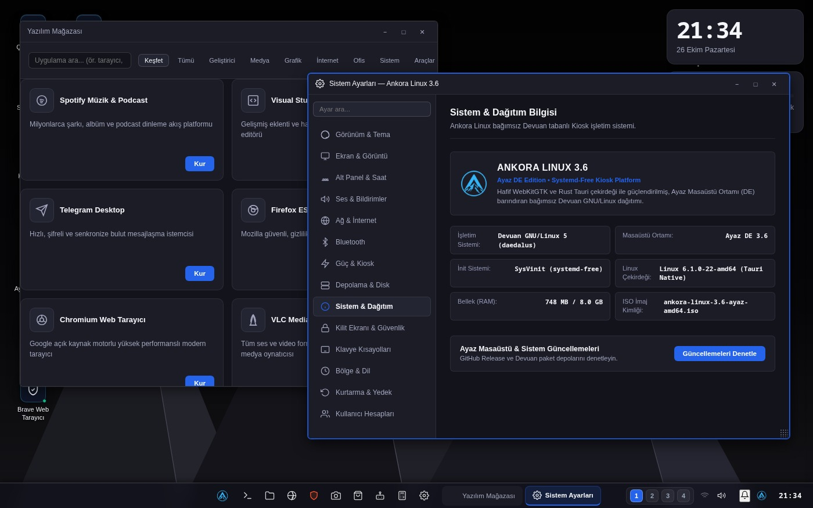

Bring your old computer back to life
Ankora Linux 4.0 is a clean, Devuan-based Turkish operating system built for everyday users and classrooms. With Eco RAM mode enabled automatically under 4 GB of RAM, 14 full-system themes, and a 278-package software store, it is ready the moment you boot. This release marks Republic Day (29 October) with the flag-red Cumhuriyet theme.





Engineered for modest hardware and daily reliability
Light & Eco RAM mode
Uses about 750 MB of memory when idle. On machines with under 4 GB of RAM, Eco RAM mode turns on automatically and unmounts closed windows from memory after 30 seconds.
Turkish throughout
From the installer to all 18 built-in windows and smartboard classroom packages (ETAP), everything is written in clear Turkish.
Easy to install and maintain
Write the ISO to a USB stick and boot. The built-in USB & ISO flasher, Start menu editor, and one-button Ayaz Updater remove the need for terminal commands.
Ready to use from the very first boot
You do not have to hunt for basic utilities; everyday tools for home, office, and classrooms are built right into Ayaz DE 4.0.
- Web browser (Ayaz & Brave) plus File Manager with menu bar and automatic USB drive mounting
- 278-package Software Store (including MEB Certificate, Scratch, GCompris, GeoGebra, and ETAP smartboard tools)
- 14 full-system theme bundles (including Çınar, Meltem, Kor, Dem, Boğaz, and Ayna), 14 wallpapers, and 8 icon sets
- Ankora AI System Assistant (local Ollama or bring-your-own API key with one-time security token confirmation)
- Built-in USB & ISO Flasher, Start Menu Editor, PDF/document viewer, and Ankora Office notes
- One-button Ayaz Updater and ankora-doctor system health diagnostics
Comparison with popular distributions
Idle desktop memory usage. The Ankora figure was measured on the installed system with free -m; the other figures come from the sources listed on the page.
| Distribution | Idle memory |
|---|---|
| Ankora Linux 4.0 (Ayaz DE) | ~750 MB |
| Ubuntu 24.04 (GNOME) | 830 MB |
| Linux Mint 22.1 (Cinnamon) | 888 MB |
| Xubuntu 24.04 (Xfce) | 668 MB |
| Lubuntu 24.04 (LXQt) | 464 MB |
| Debian 12 (GNOME) | over 1 GB |
Ankora: output of free -m on the installed system after signing in to the desktop (October 2026). Others: measurements published by Android Authority in October 2024; for Mint, an independent review (888 MB). Hardware, versions and methods differ; these are approximate figures.
Ready in three steps
Download
Get the ISO file. A verification file sits next to it.
Write it to a USB stick
Write the ISO to an empty USB stick with a free tool.
Boot and install
Start the computer from the USB stick. The wizard explains the rest.
Common questions
What is Ankora Linux?
It is a simple Turkish operating system for everyday users. It is built on Devuan 5.0 Daedalus (systemd-free) and comes with its own desktop environment, Ayaz DE 4.0.
Does it run on an old computer?
Yes. It uses about 750 MB of memory when idle and enables Eco RAM mode automatically under 4 GB of RAM. It runs comfortably on a laptop with 2 GB of memory.
Does it cost anything?
No, it is completely free and open-source under the GPL-3.0 license.
How do I install it?
Write the ISO to a USB stick and boot the computer from it. The installer guides you step by step.